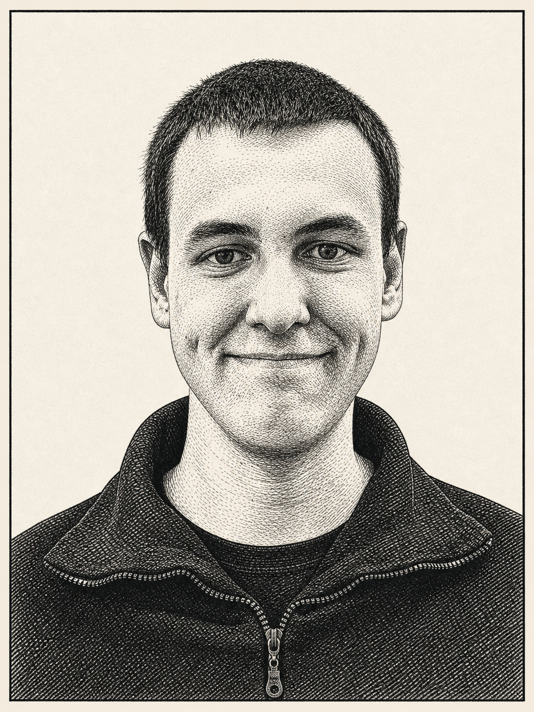

Я студент 4-го курса УрФУ по направлению «Алгоритмы искусственного интеллекта» и выпускник Летней ML-академии Яндекса.
◆ АГЕНТНЫЕ СИСТЕМЫ · МУЛЬТИМОДАЛЬНЫЕ МОДЕЛИ
АртурЗаплатин
RAG · AGENTS · RETRIEVAL
Создаю LLM/VLM-агентов и RAG-системы, в которых качество поиска подтверждается метриками, а каждое решение можно объяснить.
RAGAGENTSRETRIEVALEVALUATION

и исследовательМосква · 2026
01
Обо мне
Задачи на стыке LLM, компьютерного зрения и retrieval: когда агенту нужно понять условие, найти нужный контекст и не испортить правильный ответ слабым источником.
02
Инструменты
Технологии, с которыми
я работаю каждый день
LLM & Agents
Qwen 3.5 9B · LangChain · LangGraph · Tool use · Pydantic · prompt design
Retrieval & RAG
FAISS · BM25 · E5 · SentenceTransformers · RRF · MMR · reranking · Ragas
ML & Data
Python · PyTorch · pandas · SQL · SQLite · OCR · PDF processing · experiment design
Engineering
FastAPI · Git · Docker · Linux · Hugging Face · OpenRouter · pytest
03
Проекты
Проекты
01
ML-АКАДЕМИЯ ЯНДЕКСА · 2026
VLM-агент с RAG
по турецким учебникам
Агент решает школьные задания с изображений и сам решает, когда обратиться к базе учебников за дополнительным контекстом.
ИТОГОВАЯ ACCURACY91,6%
251 верный ответ из 274
Проверить, сможет ли управляемый поиск по турецким учебникам повысить качество VLM на школьных заданиях, где одного изображения или общих знаний модели недостаточно.
Собрать агента, который обращается к RAG только при необходимости, использует релевантные материалы и не заменяет верный исходный ответ слабым или противоречивым фрагментом.
МОЙ ЛИЧНЫЙ ВКЛАД
От базового вызова RAG — к контролируемому агентному поиску
Я отвечал за основу агента и за логику, которая определяет, когда и как найденные материалы могут повлиять на итоговое решение.
Собрал агентный цикл работы с RAG
Реализовал инструмент поиска, который агент вызывает самостоятельно. Найденные чанки возвращаются прямо в контекст решения, после чего модель сопоставляет их с условием задачи и формирует ответ.
- ограничил число обращений к поиску двумя вызовами;
- добавил защиту от повторения одинаковых запросов;
- сохранял запрос, найденные фрагменты, время выполнения и ошибки;
- фиксировал причину завершения, чтобы поведение агента можно было разобрать после эксперимента.
Подключил FAISS и усилил контроль качества контекста
Доработал выдачу так, чтобы агент получал материалы именно для нужного предмета и класса, а слабые совпадения не попадали в решение.
- добавил фильтрацию по предмету и классу;
- ввёл отсечение фрагментов ниже порога релевантности;
- при слабой выдаче запускал один повторный поиск с переформулированным запросом;
- при конфликте между текстом и изображением оставлял приоритет за исходным условием на изображении.
Добавил дополнительное ранжирование через MMR
Обычный top-k часто возвращал несколько почти одинаковых страниц. MMR позволил сохранить релевантность, но сделать контекст разнообразнее — это особенно важно для составных школьных задач.
- сравнил разные значения lambda: 0,3 / 0,5 / 0,7;
- проверил порядок выдачи при fetch_k=20 и итоговом top-5;
- добился того, чтобы в контекст попадали дополняющие, а не дублирующие друг друга фрагменты.
Изображение→Исходный ответ VLM→Решение о поиске→FAISS + фильтры + MMR→Проверка источника
ДИНАМИКА КАЧЕСТВА
Каждый слой проверяли на одном наборе из 274 задач
Так можно сравнивать подходы напрямую и не приписывать рост случайному изменению выборки.
Обычный page-RAG141 / 27451,5%
Визуальный RAG171 / 27462,4%
Агент без инструментов191 / 27469,7%
Итоговый пайплайн251 / 27491,6%
Слабый retrieval мог испортить верный ответ
Если источник не подтверждал решение достаточно уверенно, система сохраняла исходный ответ модели.
Поиск возвращал дубли и тратил вызовы
Повторные запросы блокировались, число обращений ограничивалось, а MMR разводил похожие фрагменты.
Текст мог расходиться с изображением
В спорной ситуации главным источником оставалось исходное условие задачи, а не найденная страница.
ПРОЕКТ 02
/
ИСТОРИЯ УРАЛА
02
УЧЕБНЫЙ ПРОЕКТ · 2026
RAG-система
по истории Урала
Воспроизводимый pipeline от загрузки исторических PDF до ответа с источниками и сравнения retrieval-стратегий.
ЛУЧШИЙ RETRIEVAL0,82
Recall@5 · Hybrid RRF
Построить RAG по русскоязычным историческим PDF и сравнить методы поиска на данных, где важны точные даты, фамилии, географические названия и редкие термины.
Выбрать устойчивую retrieval-стратегию по измеримым метрикам, а не по нескольким удачным примерам ответов.
МОЙ ЛИЧНЫЙ ВКЛАД
Собрал полный RAG-цикл и систему сравнения методов
Проектировал pipeline целиком: от подготовки корпуса до экспериментов и разбора того, почему отдельные усложнения не дали прироста.
Подготовил корпус исторических документов
Извлёк текст из 1 433 PDF-страниц, очистил служебные символы и разрезал материал на 6 300 чанков. Использовал размер чанка 1 200 символов и overlap 200, чтобы не терять смысл на границах фрагментов.
Реализовал несколько retrieval-стратегий
Построил BM25 для точных совпадений и FAISS с SentenceTransformers для смыслового поиска. Объединил результаты через Reciprocal Rank Fusion, затем отдельно проверил multi-query и reranking.
Связал поиск с генерацией ответа
Передавал найденные фрагменты в LLM через OpenRouter, добавил ссылки на источники и отделил retrieval от генерации, чтобы можно было понять, на каком именно этапе возникает ошибка.
Провёл единое сравнение на 25 вопросах
Для всех пяти методов использовал одинаковый top_k=5. Считал Precision@5, Recall@5, Hit@5 и MRR, а качество ответов проверял через answer F1, groundedness и выборочную оценку Ragas.
PDF→Очистка + chunking→BM25 + FAISS→RRF / rerank→OpenRouter→Evaluation
РЕЗУЛЬТАТЫ RETRIEVAL · TOP-5
Hybrid RRF оказался самым устойчивым вариантом
Он сохранил точность ключевых слов BM25 и добавил смысловые совпадения FAISS. Reranker, наоборот, ухудшил выдачу — этот отрицательный результат я сохранил в выводах.
| Метод | Precision@5 | Recall@5 | Hit@5 | MRR |
|---|---|---|---|---|
| BM25 | 0,5033 | 0,7933 | 0,9200 | 0,7333 |
| Semantic FAISS | 0,3267 | 0,7467 | 0,8000 | 0,6280 |
| Hybrid RRF BEST | 0,4393 | 0,8200 | 0,9200 | 0,7867 |
| Multi-query | 0,4933 | 0,6600 | 0,7600 | 0,6600 |
| Hybrid + reranker | 0,3233 | 0,5933 | 0,6400 | 0,5033 |
BM25 хорошо находил даты и имена
Точные сущности важны для исторического корпуса, поэтому лексический поиск нельзя было просто заменить embeddings.
Semantic search расширял смысл
FAISS находил перефразированные совпадения, но отдельно уступал BM25 по точности и позиции первого релевантного фрагмента.
Усложнение не гарантирует рост
Multi-query и общий reranker снизили часть метрик. Решение — отдельная абляция каждого шага, а не доверие названию метода.
04
Образование
Образование
Уральский федеральный университет
ИРИТ-РТФ · 09.03.01
«Алгоритмы искусственного интеллекта»
- 01Летняя ML-академия Яндекса
Выпускник · 2026
- 02Студкемп Яндекса «Алиса и умные устройства»
- 03Karpov.courses
ML Engineer · MLOps · SQL · 2024—2025